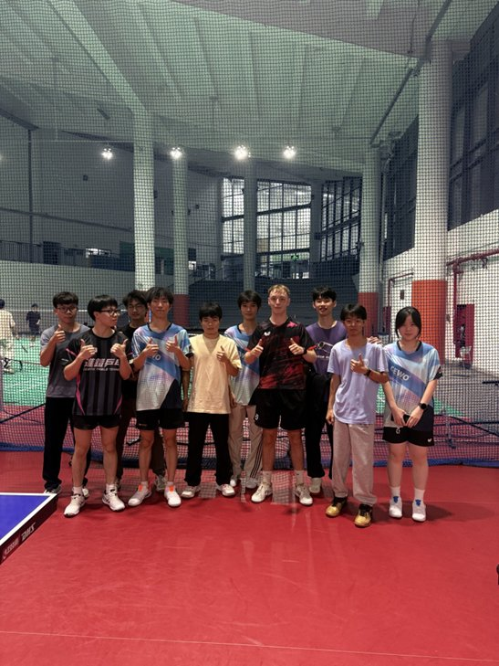
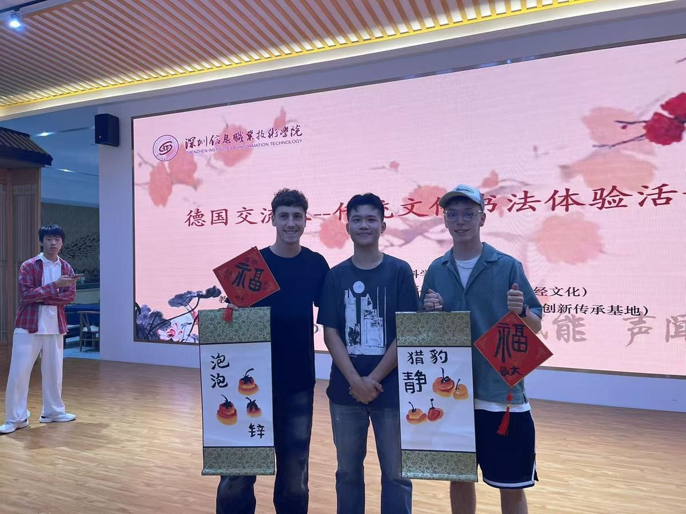
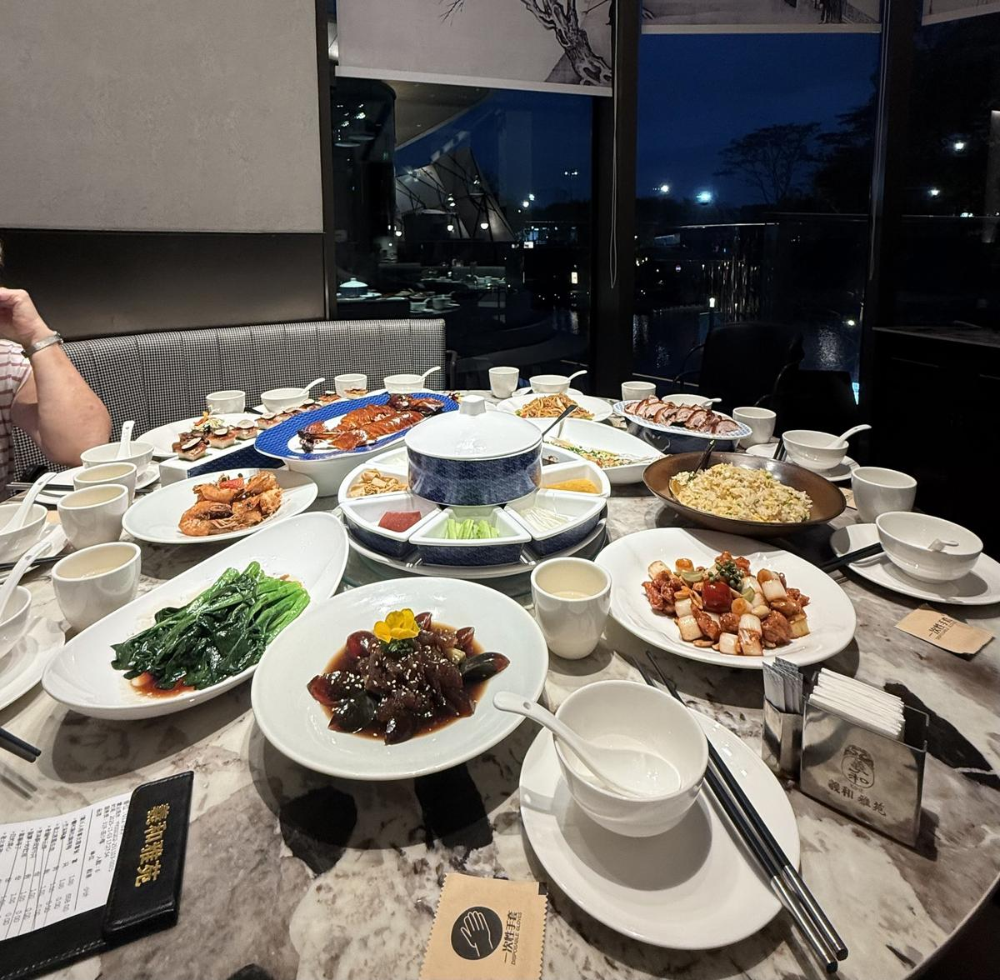
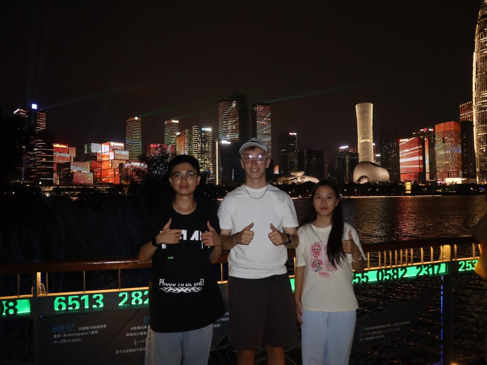
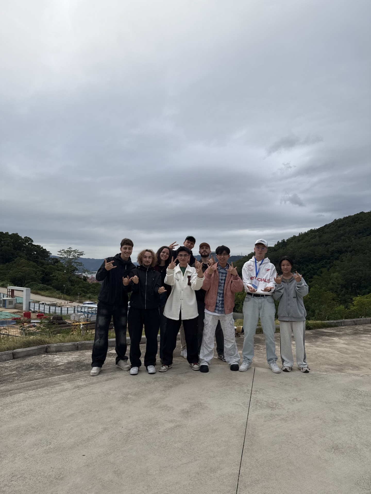

I've traveled a bit before this. Seen a few countries, tried different food, met different people. But Shenzhen was something else entirely. Two weeks in southern China, and it turned out to be one of the best experiences I've had in years. Not exaggerating.
The whole thing was an exchange program through Bosch, in partnership with the Shenzhen Institute of Information Technology. We stayed in a hotel right on the university campus. The official reason for going? Getting a drone pilot license. But what actually made the trip special had very little to do with drones.
The Drone License
The training itself was solid. Theory sessions on regulations, airspace, safety — pretty dense stuff. Then practical flight training where we actually got to fly drones through courses. That part was fun. There's a big difference between reading about drone flight and actually doing it.
I passed and got the license. Cool to have, but honestly — it's the least interesting thing I brought home from this trip.
The Culture Program
Outside of the drone stuff, the university had put together a whole cultural program for us. We did traditional Chinese archery, tried martial arts, played paddle sports, and — obviously — table tennis. Playing TT with Chinese students was a different level. The speed, the spin, the way they train. As someone who plays Landesliga back in Germany, I loved every second of it.

We also did calligraphy workshops, learned about traditional clothing, listened to Chinese music. And these weren't just quick tourist activities — they were real, hands-on sessions with people who were excited to teach us. You could feel that.

The Food
Not gonna lie, I was a bit nervous about the food before going. Different continent, completely different cuisine, no idea if my stomach would be okay with it. Turns out that was all for nothing. The food was amazing. Like genuinely, every single meal. Breakfast, lunch, dinner — all incredible. The variety, the flavors, the amount of dishes on the table at any given time. I've never eaten this well for two straight weeks.

What I liked most was the communal aspect. Everyone shares everything, you try a bit of each dish, you sit together. It's not just eating — it's a social thing. That became one of my favorite parts of the daily routine there.
The People
This is the part I care about most. And the part that actually stayed with me.
I've never experienced this level of hospitality anywhere. The students we met, the teachers, even random people — everyone was so open and welcoming. Not in a polite-but-distant way, but genuinely interested. They wanted to know about us, our lives, our culture, and they were happy to share theirs. It was the most natural, easy connection I've had in any country I've visited.

I made real friendships in those two weeks. The kind that usually take months. But when you're in a foreign country, sharing every meal, training together, laughing about the language barrier — it all happens way faster. There's less small talk and more real stuff.

What I Took Home
A drone license, yeah. But more than that — a different perspective. I went there expecting some technical training with a bit of culture on the side. What I got was an experience that changed how I think about new environments and meeting new people.
The biggest thing I learned is simple: if you're genuinely curious about someone else's world, they'll open up theirs to you. That's it. No trick to it. The Chinese students I met weren't just being friendly out of obligation — they actually wanted to connect. And when both sides feel that, something really good happens.
I've been to other countries before and I'll go to more. But Shenzhen set the bar. For how intense an experience can be, how fast you can connect with people, and how much you can grow in just two weeks when you actually throw yourself into something new.
If you ever get the chance to do something like this — an exchange program, especially to somewhere you'd never normally go — just do it. Don't overthink it. The things that make you nervous beforehand are usually the same things that make it unforgettable.